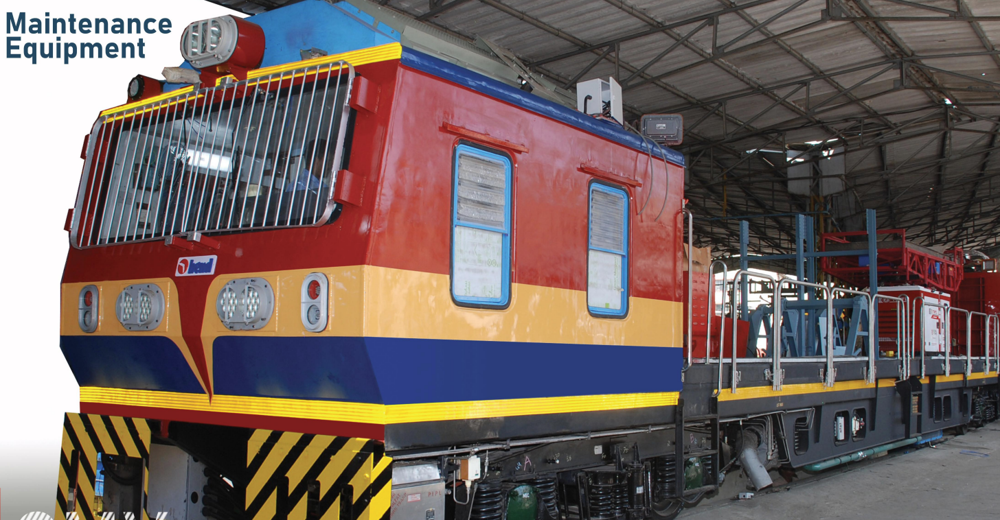

| Feature | Details |
|---|---|
| Dimensions | - Track gauge:1435mm(SG) - Length:21336mm (Over Body) - Width:2900mm - Height:3845mm |
| Max. Speed | 65 Kmph |
| Hauling Capacity | Fully loaded 40T Trailer Wagon. |
| Brakes | Compressed air brake with tread brake units applied on all wheels, gradual application and release. |
| Axles | - Two powered Axles and Two trailing Axles - 16 Tonnes Load Capacity |
| Bogie | Two axle bogie with floating bolster suspension arrangement with primary and secondary as a helical coil spring |
| Final Drive | Axle mounted helical gear box (Double reduction) |
| Parking brakes | Spring loaded, Electrically/ Pneumatically operated. |
| Crane with Interchangeable basket | Lifting capacity of hook 1T @ 5m distance & Basket load carrying capacity -300Kg + Tools. |
| Lifting & Swiveling Platform | Low raised, hydraulically lifted & electrically swiveling with 500kg + tools lifting capacity. |